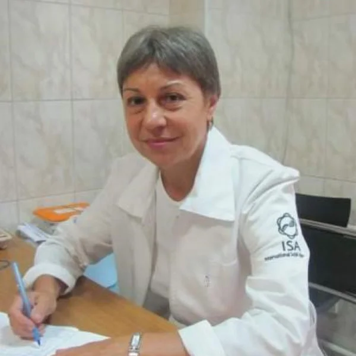

ДОЛЖНОСТЬ: Врач рефлексотерапевт
СПЕЦИАЛИАЦИЯ: Педиатр, рефлексотерапевт, специалист Су-Джок терапии, гирудотерапевт
СТАЖ РАБОТЫ ПО СПЕЦИАЛЬНОСТИ: Врач-педиатр - 17 лет, Врач-рефлексотерапевт - с 1994 года по настоящее время.
ОБЩИЕ СВЕДЕНИЯ О ВРАЧЕ
БАЗОВОЕ ОБРАЗОВАНИЕ:
- 2-й МОЛГМИ им. Н.И.Пирогова по специальности «Педиатрия» - 1978 г.
- Интернатура - 1979 г.
- Ординатура по специальности «Педиатрия» - 1986 г.
ДОПОЛНИТЕЛЬНОЕ ОБРАЗОВАНИЕ:
- Рефлексотерапия - 1994 г., 1999 г.,2004 г., 2009 г., 2014 г., 2019 г.;
- Су-Джок терапия - обучение у основоположника метода профессора из Южной Кореи Пак Чже Ву в течении 16 лет ежегодно. Обладатель ЗОЛОТОГО СЕРТИФИКАТА по Су-Джок терапии;
- Прикладная гомотоксикология - 2006 г.;
- Гирудотерапия - 2007 г.;
- Мануальная терапия внутренних органов - 2007 г.
Ведет преподавательскую деятельность по Су-Джок терапии.
ОПЫТ РАБОТЫ:
ЗАБОЛЕВАНИЯ, КОТОРЫЕ ЛЕЧИТ ВРАЧ:
Полученные знания и большой практический опыт позволяют успешно лечить заболевания опорно-двигательного аппарата, желудочно-кишечного тракта, психо-эмоциональные нарушения, заболевания сердечно-сосудистой системы, нервной системы, дыхательной системы,эндокринной, мочеполовой, имунной систем, кожных болезней и пр.
Хорошие результаты в лечении бесплодия, а также заболеваний, признаваемых официальной медициной неизлечимыми - склеродермии, гипертонии, бронхиальной астмы, псориаза, ревматоидного артрита и др.
ПРОЦЕДУРЫ И МАНИПУЛЯЦИИ:
ПЕРЕЧЕНЬ ОБОРУДОВАНИЯ:
ЦЕНЫ НА УСЛУГИ ВРАЧА:

Материалы института: itvm.ru ↗ · Информация на 26 октября 2026 года.